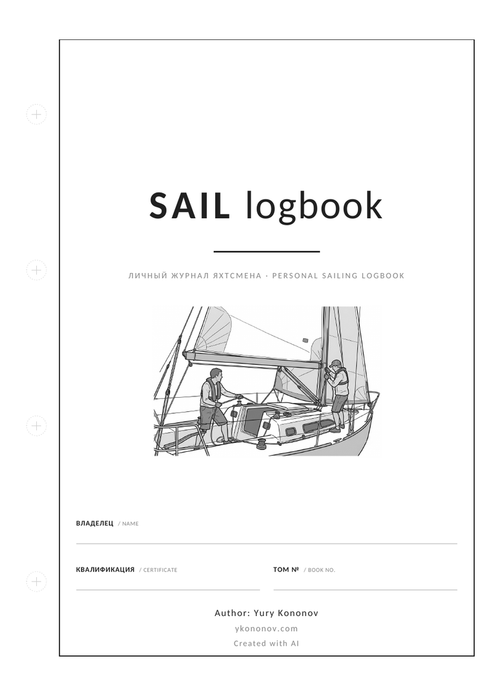
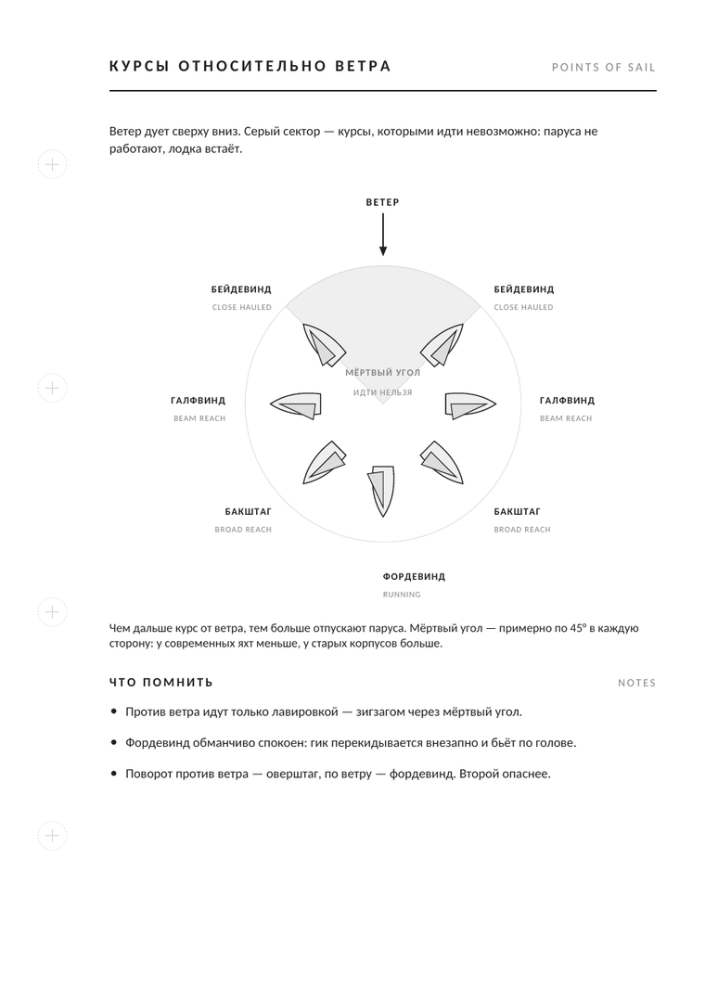
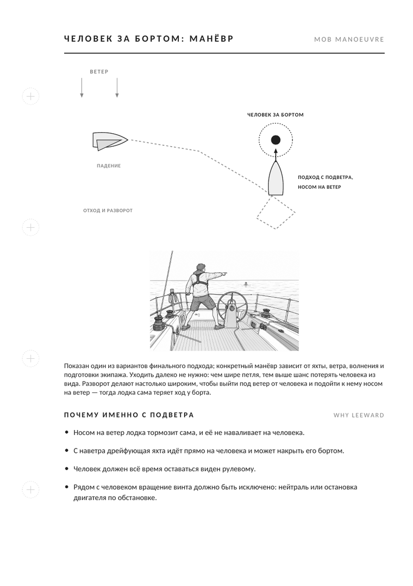
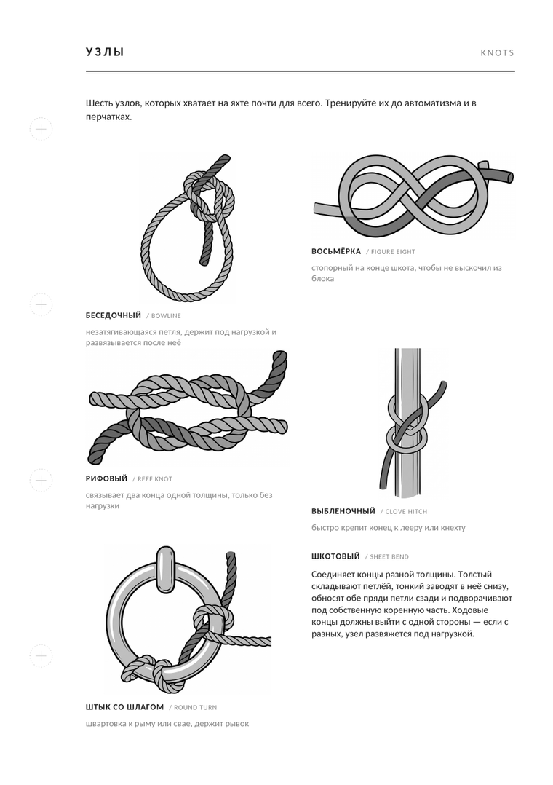
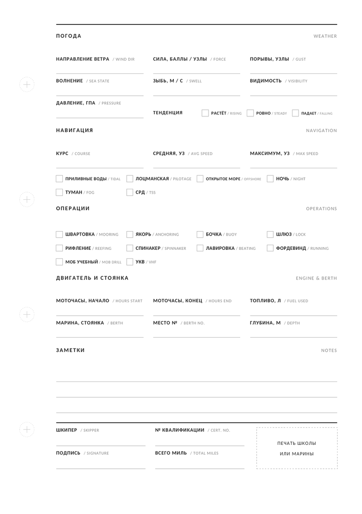

A personal A5 sailing logbook — passage records, a reference section and an aide-mémoire in one book. A print-ready PDF, with the layout written in code: edit the text, rebuild the book with one command.

What is inside
42 spreads: date, vessel, crew, port of departure and arrival, times, distance run, weather, your role on board, skipper's signature.
The things you need to recall in seconds on the water, not hunt for on a phone with no signal.
Not a screen PDF that falls apart on paper.
Pages




Page headings and the reference text are in Russian; every field label is doubled in English, so the book fills in fine with a mixed crew.
Printing
Grab the latest release and pick one.
| File | When to use it |
|---|---|
sail-logbook-A5-final.pdf | home or copy shop: sheet is exactly 148 × 210 mm |
…-bleed3mm-cropmarks.pdf | shop guillotines a stack: 154 × 216 mm, 3 mm bleed, crop marks |
punch-template-A5.pdf | a single 1:1 sheet to test-fit the punch pattern |
Start with the punch template.
Print it at 100 % scale, with no fit-to-page, and hold it against your cover —
ring spacing varies between binders. Hole geometry lives in constants at the
top of src/logbook.py.
Paper: offset 100–120 gsm, double-sided, even page count.
Build it yourself
There is no binary layout file: the typesetting is Python on top of reportlab. Edit the text, rebuild the book.
git clone https://github.com/yknnv/sail-logbook.git
cd sail-logbook
pip install -r requirements.txt
./build.shbuild.sh renders the three PDFs and runs the layout checks:
overflow past the type area with a 0.15 mm tolerance, horizontal glyph
overlaps, vertical word overlaps. An overfull page fails the build and names
the page and the missing millimetres — the layout cannot drift silently.
Questions
Offset stock, 100–120 gsm, double-sided, single black ink. Below 90 gsm the text shows through; above 130 gsm the stack stops sitting flat in the rings.
The sheets are removable and the owner sets the order — finished passages come out, the reference pages you need move to the front.
Ring spacing varies, so print the punch template at 100 % first. Diameter,
inset and spacing are the constants HOLE_D, HOLE_INSET,
HOLE_SPACING.
Yes. Each reference page is one function in src/reference.py,
and the pages list sets the order. The layout rules are in
CONTRIBUTING.md.
Yes. Code is MIT, content is CC BY-NC-SA 4.0 — print it for yourself, your crew or your school, but not for sale.
No. Figures and procedures depend on your training, your gear, local rules and the passage plan. This is an aide-mémoire for someone who has been taught.